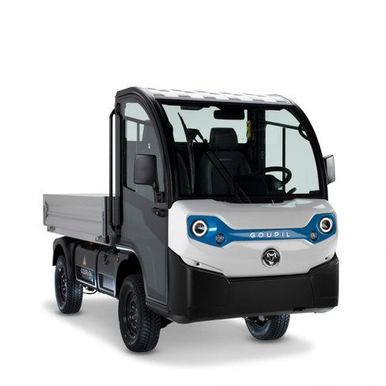
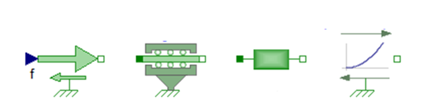
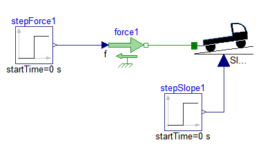
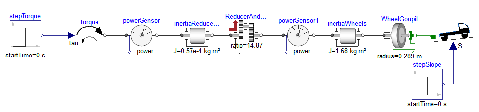
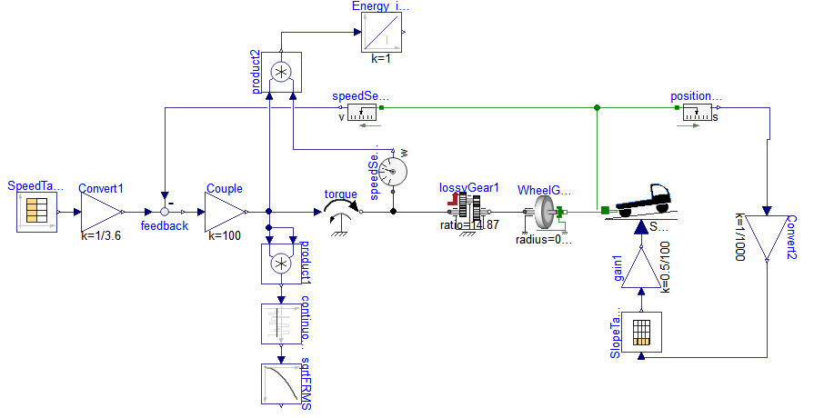
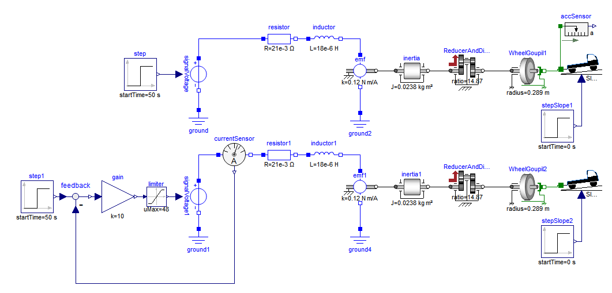

Sélection d’une motorisation#
Présentation des caractéristiques du véhicule#
Le Goupil G4 est un petit utilitaire électrique urbain, utilisé par les villes et les entreprises pour déplacer de petites charges sur de courtes distances (livraison, entretien de parcs, services techniques).
Véhicule utilitaire électrique Goupil

L’objectif de ce problème est de simuler la dynamique longitudinale du véhicule et sa transmission de puissance afin de sélectionner une motorisation électrique. Les tableaux suivants donne les principales caractéristiques des différents composants mécaniques du Goupil G4.
Caractéristiques générales du Goupil G4 et de ses composants mécaniques
Caractéristiques générales |
|
|---|---|
Masse du Goupil G4 (sans batterie) |
582 kg |
Masse du pack batterie |
148 kg |
Masse du conducteur |
70 kg |
Masse du chargement |
500 kg |
Vitesse maximale |
50 km/h |
Pente maximale |
15% |
Roues |
|
|---|---|
Diamètre extérieur |
578 mm |
Coefficient de résistance au roulement |
100.10-4 |
Inertie d’une roue |
0.42 kg.m² |
Réducteur |
|
|---|---|
Rapport de réduction |
14.87 |
Inertie (sur axe rapide) |
0.57.10-4 kg.m² |
Rendement |
0.88 |
Considérations aérodynamiques |
|
|---|---|
Surface de pénétration dans l’air (S) |
2.1 m2 |
Masse volumique de l’air à 20°C |
1.205 kg. m-3 |
Coefficient de pénétration dans l’air |
0.4 |
Modélisation de la dynamique longitudinale#
Un modèle mécanique longitudinal [DUYSINX, 2020] permet d’estimer la puissance motrice nécessaire pour assurer certains points de fonctionnement du véhicule. Il peut servir également de base pour prédire des consommations énergétiques sur cycles d’utilisation.
Question : Proposez un diagramme 0D/1D et donnez les équations correspondantes permettant de modéliser la dynamique du Goupil en translation en prenant notamment en compte les forces suivantes:
L’inertie en translation du Goupil et du conducteur ;
L’effet de la gravité dans une pente ;
Les efforts aérodynamiques \(F_{aero} = \frac{1}{2}.\rho_{air}C_{x}S.v^{2} \approx 0.5061.v^{2}\) en N où v correspond à la vitesse du Goupil en m/s ;
Les efforts de résistance au roulement proportionnels à l’effort normal sur les roues et au coefficient de résistance de roulement Crr des pneus. Sur route, avec un gonflage adéquat, on considèrera Crr = 100.10-4.
Implémentez ce modèle dans la brique vide du modèle Goupil du fichier Modelica fourni. L’entrée de type signal correspond à la pente (où 0.07 correspond à une pente de 7%). Le port mécanique permettra de modéliser les efforts équivalents de la motorisation.
Remarque 1 : GoupilMass, Crr, Alpha (0,3), g sont des coefficients declarés dans le modèle Goupil.
Remarque 2 : Pour votre modèle vous pouvez utiliser des modèles de la librairie standard (MSL) comme
dans Modelica/Mechanics/Translational/ les sources d’effort (Sources/Force) et composants de type inertie ou frottement (Components/Mass, Components/SupportFriction);
dans Modelica/Blocks/Math : Sum, Product, Gain, Atan, Sin, …
Composants Modelica 
Question : Calculez analytiquement l’effort à fournir pour obtenir en régime permanent une vitesse v = 30 km/h sur une pente de 7%. Validez par simulation ce résultat en utilisant le modèle TestGoupil.
Modèle “TestGoupil” 
Modélisation de la transmission de puissance#
L’ensemble des deux réducteurs (différentiel et à pignons droits) peut se représenter par un réducteur équivalent présentant les caractéristiques suivantes : inertie sur l’axe rapide 0,57 kg.cm2, rapport de réduction global 14.87, rendement global de 88%. Les effets des raideurs ne sont pas pris en compte ici.
Question : Calculez analytiquement pour le point opérationnel précédent (vitesse constante de 30 km/h, pente de 7%):
La vitesse angulaire de la roue et la vitesse du moteur électrique (sur l’axe rapide du réducteur équivalent) ;
Les pertes du réducteur ;
La puissance mécanique sur l’axe rapide ;
Le couple et la puissance du moteur ;
Paramétrez et simulez le modèle TestSlopeMotor. Ce modèle représente un profil de mission que le Goupil doit être capable de réaliser en fonctionnement nominal avec un chargement de 500 kg.
Question : Calculez la masse équivalente des inerties des roues et du réducteur. Conclure quant à leurs impacts sur la dynamique du système. Retrouvez ce résultat sur le modèle TestSlopeMotor.
Modèle “TestSlopeMotor” 
Simulation d’un profil d’utilisation#
On souhaite à présent modéliser un profil d’utilisation plus représentatif des conditions réelles d’utilisation du véhicule. Complétez pour cela le modèle TestProfile_Cycle:
le bloc SpeedTable fournit l’évolution du profil de vitesse au cours du temps
le bloc SlopeTable founrit l’évolution de la pente en fonction de la position du véhicule.
Modèle “TestProfile_Cycle”

Question: Relevez la puissance maximale à fournir par le moteur pour réaliser cette mission et le couple RMS en fin de cycle. Établissez le profil vitesse de rotation et couple moteur pour réaliser ce cycle.
Remarque : le Root Mean Square Torque (couple RMS) est la moyenne quadratique du couple au cours d’un cycle. Pour des considérations thermiques, il faut que ce couple soit inférieur au couple nominal du moteur.
Remarque : Sur Dymola, après simulation, vous pouvez changer la variable des abscisses de votre graphe en utilisant l’outil Indepent Variable de l’onglet Plot Options. Vous devez au préalable avoir sélectionné dans l’arborescence Variable Browser la variable que vous souhaitez utiliser comme référence.
Sélection d’un moteur#
Nous souhaitons utiliser un moteur à courant continu de la marque Lynch Motor.
Question: Sélectionnez un moteur pour un prototype de ce véhicule.
Gamme de moteurs continus (48 V) de la marque Lynch motor
Moteur |
Constante de couple (N.m/A) |
Résistance (mOhm) |
Inductance (µH) |
Inertie (kg.m²) |
Courant max (A) |
Courant nominal (A) |
|---|---|---|---|---|---|---|
LEM 130 |
0.0631 |
32.5 |
14 |
0.0116 |
100 |
75 |
LEM 170 |
0.12 |
24 |
23 |
0.0238 |
400 |
140 |
LEM 240 |
0.21 |
12.41 |
32 |
0.0327 |
360 |
300 |
import pandas as pd
# Donnees constructeur
data = {'Moteur': ['LEM 130', 'LEM 170', 'LEM 240'],
'K (N.m/A)': [0.0631, 0.12, 0.21],
'R (Ohm)': [32.5e-3, 24e-3, 14.41e-3],
'Imax (A)': [100,400,360],
'Inom (A)': [75,140,300]
}
df = pd.DataFrame(data)
# Calcul des limites operationnelles
df['Max speed (rpm)']=48/df['K (N.m/A)']*60/2/3.14
df['Max Torque (N.m)']=df['K (N.m/A)'] * df['Imax (A)']
df['Mean Torque (N.m)']=df['K (N.m/A)'] * df['Inom (A)']
df
| Moteur | K (N.m/A) | R (Ohm) | Imax (A) | Inom (A) | Max speed (rpm) | Max Torque (N.m) | Mean Torque (N.m) | |
|---|---|---|---|---|---|---|---|---|
| 0 | LEM 130 | 0.0631 | 0.03250 | 100 | 75 | 7267.808655 | 6.31 | 4.7325 |
| 1 | LEM 170 | 0.1200 | 0.02400 | 400 | 140 | 3821.656051 | 48.00 | 16.8000 |
| 2 | LEM 240 | 0.2100 | 0.01441 | 360 | 300 | 2183.803458 | 75.60 | 63.0000 |
Simulation du moteur#
On suppose ici que l’électronique de puissance contrôlant le moteur peut s’assimiler à une source de tension (limitée à 48V maximum). Cette source de tension peut également être controlée en courant en ajoutant un capteur de courant et une boucle d’asservissement.
Question: Ajouter aux modèles précedent le moteur à courant continu sélectionné. Simulez le moteur en alimentation tension et en alimentation courant. Imposez la tension maximale ou le courant maximal sous la forme d’un échelon qui s’annule après 50s sur une configuratoin de pente nulle. Quelle type d’alimentation vous semble la plus judicieuse ?
Modèle “TestMotor”

Références#
[DUYSINX, 2020] DUYSINX, Pierre. “MECA0525: PERFORMANCES ET COMPORTEMENT DES VEHICULES”, Universite de Liège. Link